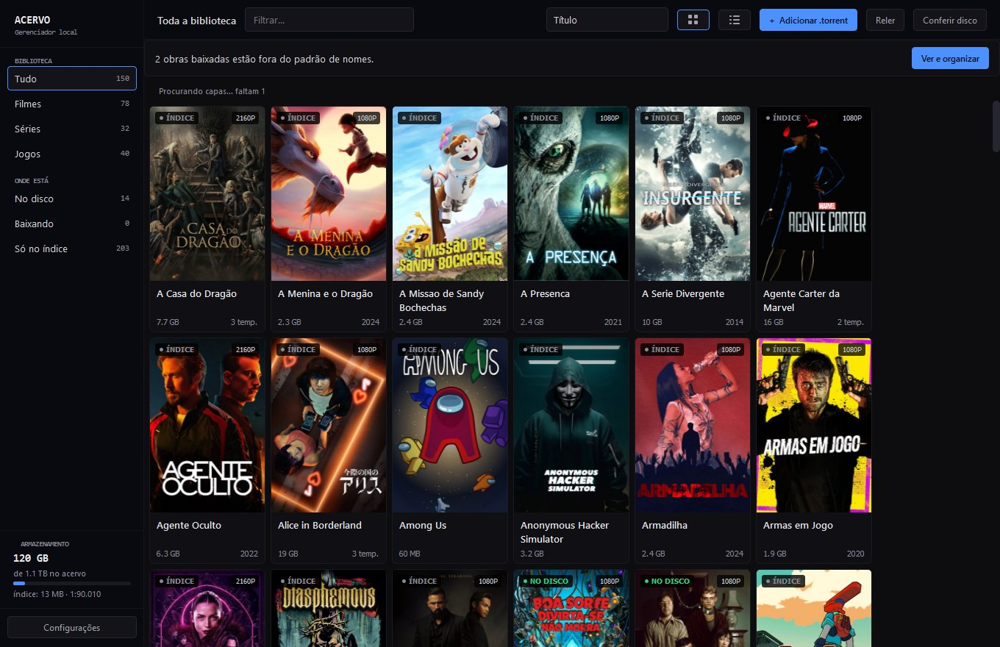
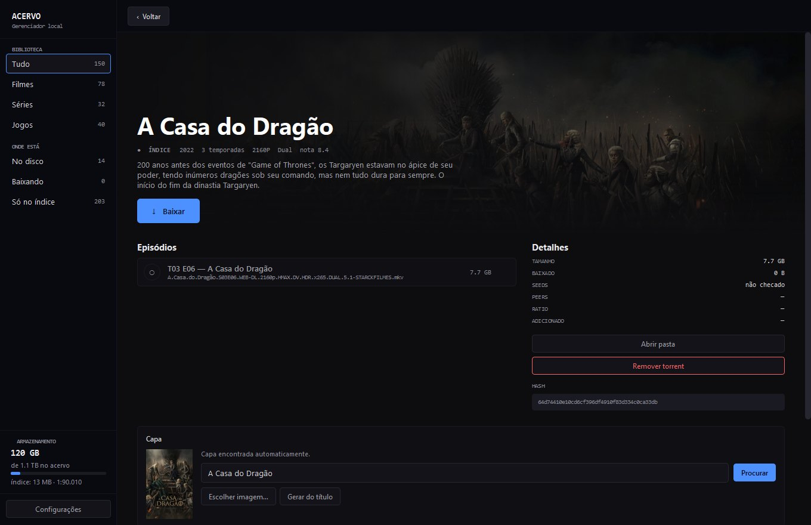
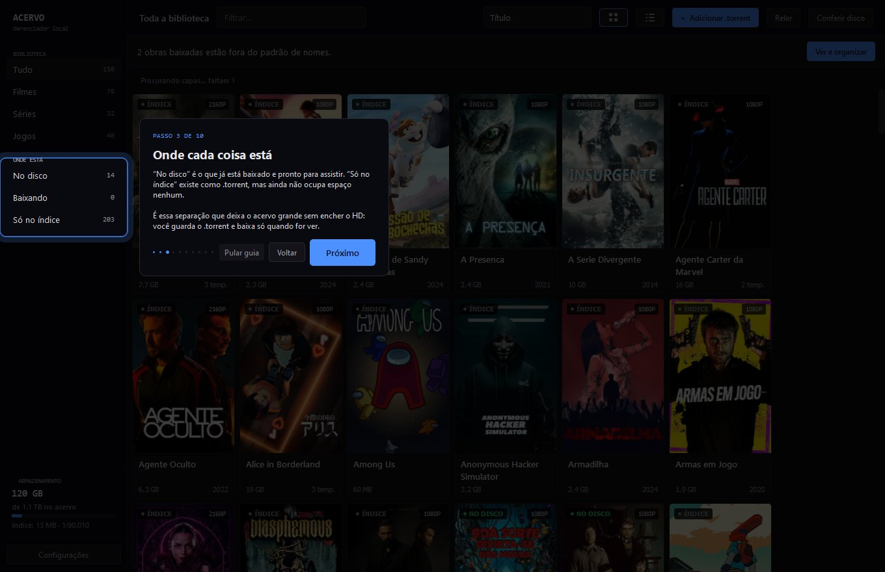
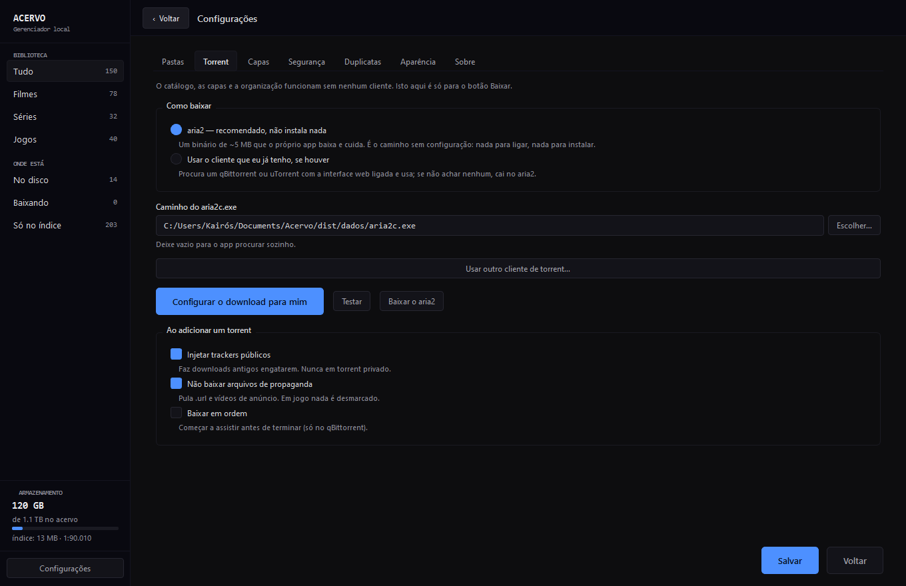

O Acervo lê seus arquivos .torrent e monta um catálogo com capa,
sinopse e nota. O .torrent é a biblioteca permanente; o
vídeo é cache — você baixa quando quer ver e devolve o espaço quando
terminar.
.torrent40 MB · sem instalador, sem dependências · Windows 10 ou mais novo · ver todas as versões

Um acervo grande não cabe no disco. O do desenvolvedor tem 1,24 TiB — e o HD tinha 1,22 TiB livres, ou seja, a biblioteca inteira não caberia nem vazia.
Mas o .torrent não é o filme: é o endereço dele. Guardar os
.torrent custa 14 MiB e mantém tudo ao alcance. O Acervo
trata essa pasta como a biblioteca de verdade, mostra o que há nela como
um serviço de streaming mostraria, e baixa só o que você decidir ver.
Quando o espaço apertar, ele confere se ainda há quem compartilhe cada arquivo antes de liberar. Se não houver semeadores, ele se recusa a apagar — sem eles, apagar deixa de ser reversível.
Sem servidor, sem porta de rede, sem navegador envolvido. É uma janela nativa em Qt que abre com dois cliques.
Entende o nome do release: título, ano, temporada, episódio, qualidade e idioma. Centenas de obras rolam dentro do orçamento de um quadro.
Busca capa, sinopse e nota no TMDB, e capa de jogo no SteamGridDB — em segundo plano, sem você pedir.
Usa o aria2, que o próprio app baixa e cuida: nada para instalar, nada para ligar. Quem preferir pode apontar um qBittorrent ou uTorrent.
Renomeia para o padrão que Jellyfin, Plex e Kodi leem sozinhos — mostrando antes o que vai mudar, arquivo por arquivo. Nada é apagado.
Mesmo infohash, mesma obra em qualidades diferentes, e arquivos repetidos no disco — cada caso com um tratamento diferente.
Três temas (inclusive alto contraste), tamanho de texto ajustável, tudo alcançável por teclado e anunciado pelo leitor de tela.
Imagem de fundo, sinopse, nota e a lista de episódios ou arquivos. O nome legível fica em destaque; o nome bruto do release fica de legenda, pequeno — dá para conferir de qual arquivo se trata sem ele dominar a tela.
Se o arquivo está no disco, o botão reproduz no seu player padrão. Se não está, o mesmo botão baixa.

Na primeira abertura, o app escurece a janela e acende um holofote sobre cada controle, explicando aquele controle ali — com o seu catálogo atrás, não numa tela de exemplo.
Dez passos, menos de um minuto, e Esc sai a qualquer momento.
Depois ele fica em Configurações, para quem quiser rever.

Pastas, chaves de API, travas de segurança e cliente de torrent: tudo numa janela só. O botão “Configurar o download para mim” olha a máquina, descobre o que dá para descobrir e resolve o que dá para resolver sozinho.
O padrão é o aria2, que não exige nada instalado. qBittorrent e uTorrent ficam disponíveis, mas fora do caminho de quem só quer baixar um filme.

Não há instalador: o executável é um arquivo só, e os dados ficam ao lado dele.
| Requisito | Detalhe |
|---|---|
| Sistema | Windows 10 ou mais novo, 64 bits |
| Instalação | Nenhuma — baixe Acervo.exe e dê dois cliques |
| Chaves de API | Gratuitas e opcionais. Sem elas tudo funciona, menos as capas automáticas |
| Cliente de torrent | Opcional. O app baixa o aria2 sozinho se você quiser usar o botão Baixar |
| Do código-fonte | python acervo.py — precisa de Python 3.12+ e PySide6 |
O Windows SmartScreen vai avisar que o programa é de origem desconhecida. É o esperado para um executável sem assinatura digital paga — em Mais informações → Executar assim mesmo. Se preferir não confiar num binário, o código-fonte está inteiro no GitHub e gera o mesmo executável.